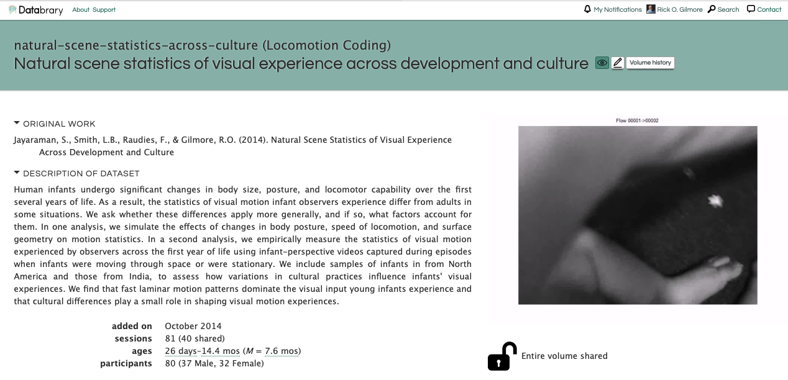
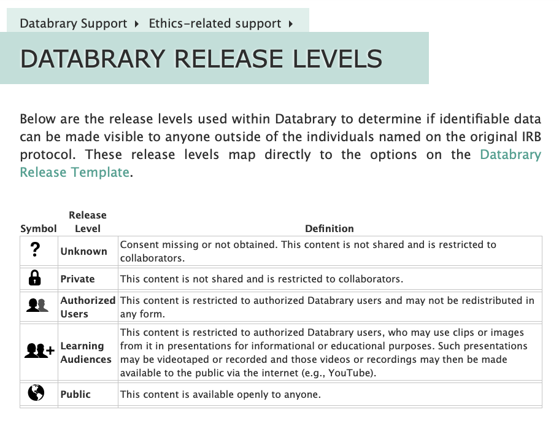

# A tibble: 1 × 9
date investigators affiliates institutions datasets_total
<dttm> <int> <int> <int> <int>
1 2024-02-18 08:07:27 1718 676 777 1653
# ℹ 4 more variables: datasets_shared <int>, n_files <int>, hours <dbl>,
# TB <dbl>Do they know…where they’re going to?
Sharing & analyzing data from wearable sensors
Rick O. Gilmore
Preliminaries
About me
- B.A., Cognitive Science, Brown University
- M.S. & Ph.D., Psychology (Cognitive Neuroscience), Carnegie Mellon University
- Human brain development, perception & action, computational modeling, machine vision, big data, open science
- Founding Director of Human Imaging, Penn State Social, Life & Engineering Sciences Imaging Center (SLEIC)
- Co-Founder/Co-Director of Databrary.org data library
- gilmore-lab.github.io
- Co-organizer & faculty R Bootcamp (17, 18, 19), Open Science Bootcamp 2023
- clawhammer banjo player, actor, cyclist, backpacker, poet, ham (W3TM)
- Judge of Elections, Precinct 26 • State College East 3
- native Coloradoan, husband, dad, grandpa

HTML slides
Agenda
- Wherefore perception?
- Case study: The development of motion perception
- Issues in openness, transparency, reproducibility
Wherefore perception?
Opening The Doors1

“If the doors of perception were cleansed every thing would appear to man as it is, Infinite. For man has closed himself up, till he sees all things thro’ narrow chinks of his cavern.”


What must animals perceive?
What must animals do?
Perception inextricably linked to action
Ecological Psychology

James J. and Eleanor J. Gibson
Behavioral priorities (evolutionary view)
- Secure sustenance (food & drink)…
- Avoid harm
- (Maybe, just maybe…) reproduce
Behavioral primitives
- Locomotion (wayfinding, steering, & balance)
- Object interaction/manipulation
- Communication (vocalizing & gesturing)
Perception informs…
- Where things are; where they’re moving
- Who/what’s out there
- Where am I positioned/moving
- What should I do next
Psychophysics
Virtues of \(\Psi\) functions

Change in visual acuity from https://gilmore-lab.github.io/visual-acuity/

(Figure 1 from Qian, Berenbaum, & Gilmore, 2022)
Limitations of psychophysical methods
- Costly to measure
- Are thresholds consistent (within observers, across situations)?
- Lab (control high, detail lower)
- vs. real world (control lower, detail high)
Case study: The development of motion perception
Optic flow
- Visual motion generated by observer movement
https://www.shutterstock.com/video/clip-1068753407-first-person-pov-snowboarding-fast-on-ski
- Self-motion <-> optic flow pattern
- Forward/backward: radial flow
- Side to side/Up or down: lateral flow
- Somersault: rotational flow

Wikipedia
Can be studied in infants & children…
- Using psychophysics (Gilmore, Baker, & Grobman, 2004; Gilmore & Rettke, 2003; Qian, Seisler, & Gilmore, 2021)
- And psychophysiology (Gilmore, Hou, Pettet, & Norcia, 2007; Gilmore, Thomas, & Fesi, 2016; Hou, Gilmore, Pettet, & Norcia, 2009)
- Development prolonged
- Brain activity immature
- What else affects developmental change?
A: Posture!

(Kretch, Franchak, & Adolph, 2014)
- Why? Geometry
Simulating effects of postural change
| Parameter | Crawling Infant | Walking Infant |
|---|---|---|
| Eye height | 0.30 m | 0.60 m |
| Locomotor speed | 0.33 m/s | 0.61 m/s |
| Head tilt | 20 deg | 9 deg |


| Type of Locomotion | Ground Plane | Room | Side Wall | Two Walls |
|---|---|---|---|---|
| Crawling | 14.41 | 14.42 | 14.43 | 14.62 |
| Walking | 9.38 | 8.56 | 7.39 | 9.18 |
- Environmental geometry doesn’t matter (much)
But, what’s the input?
- The real input?
- And how to measure it?
A: Head-mounted cameras
- Head-mounted eye trackers (Franchak, Kretch, Soska, & Adolph, 2011; Kretch & Adolph, 2015)
- Head cameras (Jayaraman & Smith, 2014)

(Figure 1 from Kretch & Adolph, 2015)
https://nyu.databrary.org/slot/7739/0,26634/asset/16747/download?inline=true
https://nyu.databrary.org/slot/7739/0,26134/asset/16749/download?inline=true
Flow patterns
Speed distribution
Findings

- Infant (passengers) experience faster visual speeds than mother
- Fast speeds common in infant visual experience
- Motion “priors” for infants ≠ mothers
Does culture (India vs. Indiana) influence?
(Figure 3 from Gilmore et al., 2015)
(Figure 4 from Gilmore et al., 2015)
A: Not much!
Issues in openness, transparency, reproducibility
Sharing identifiable data, especially video
- Costly to anonymize
- Alteration reduces reuse potential
- File sizes large
- Long-term storage $3-5K/TB
- Adolph, Franchak, Kretch, Jayaraman willing to share with me
- What about others?
Databrary
- Restricted access data library
- Based at NYU, global user community
Consistent sharing release levels
- Encourages open sharing (data owner/depositor permission not required for reuse)
Databrary
- Free (but moving to subscription model)
- Share unaltered video + other data
- Open, unrestricted research uses (broad consent)
- All data & metadata accessible via API
asset_id asset_format_id asset_duration
1 9826 -800 335883
2 9830 -800 4277835
3 9832 -800 3107147
4 22412 6 NA
5 9828 -800 4425483
6 9834 -800 4964011
7 9836 -800 5043051
8 9839 6 NA
9 9838 -800 3821387
10 17737 -800 10976384
11 12039 6 NA
12 17727 -800 2827904
13 22411 6 NA
14 17725 -800 1920512
15 17723 -800 1594688
16 22407 6 NA
17 17721 -800 3977558
18 17719 -800 3514603
19 22408 6 NA
20 22410 6 NA
21 19919 -800 14939008
22 22406 6 NA
23 25497 6 NA
24 25496 6 NA
25 25495 6 NA
26 26448 -800 5477483
27 27227 6 NA
28 28028 -800 2725723
29 28026 -800 3708160
30 26449 6 NA
31 26452 6 NA
32 26446 6 NA
33 9200 5 NA
34 315 6 NA
35 314 6 NA
36 1 -800 40000
37 117035 16 NA
38 153109 2 NA
39 153108 2 NA
40 28047 6 NA
41 28048 6 NA
42 28049 6 NA
43 28062 -800 4835115
44 28053 -800 2387051
45 28055 -800 2983616
46 28051 -800 2794880
47 37128 6 NA
48 42470 6 NA
49 37138 -800 3402326
50 36946 6 NA
51 36945 6 NA
52 36978 6 NA
53 37130 -800 2450882
54 37136 -800 3904128
55 43940 6 NA
56 38591 -800 2293056
57 38593 -800 3676480
58 38595 -800 2537494
59 38629 6 NA
60 38627 6 NA
61 38626 6 NA
62 38628 6 NA
63 38643 -800 2760992
64 42755 6 NA
65 44544 6 NA
66 45413 6 NA
67 44774 -800 9728726
68 42740 6 NA
69 43077 6 NA
70 46300 -800 13129280
71 46104 6 NA
72 60544 -800 2468587
73 60546 -800 2002624
74 60550 -800 3372779
75 60542 -800 2058198
76 60627 6 NA
77 60628 6 NA
78 60629 6 NA
79 60630 6 NA
80 61224 -800 1908544
81 61222 -800 1939563
82 65936 6 NA
83 66015 -800 24567644
84 68584 -800 2096523
85 68598 -800 2857388
86 68596 -800 2499595
87 68600 -800 2857722
88 73302 -800 2853384
89 73306 -800 2859724
90 73304 -800 798699
91 73308 -800 2856387
92 73310 -800 1435851
93 73316 -800 2855887
94 76809 6 NA
95 76807 6 NA
96 76808 6 NA
97 77819 -800 743179
98 77817 -800 2037970
99 77811 -800 121547
100 77809 -800 2853384
101 77813 -800 704538
102 77815 -800 2855220
103 80954 -800 1367450
104 79738 -800 4950334
105 80898 -800 1366949
106 80958 -800 1101739
107 80964 -800 1251691
108 80952 -800 1366382
109 80956 -800 1367934
110 80960 -800 1374390
111 80894 -800 1366382
112 80993 6 NA
113 81039 -600 15823072
114 80896 -800 1368451
115 80962 -800 1375775
116 80950 -800 1346475
117 84000 -800 14589934
118 95780 6 NA
119 115753 -800 159595
120 115739 -800 2180212
121 115749 -800 504427
122 115737 -600 14398328
123 115747 -800 2181547
124 115741 -800 2180546
125 115751 -800 2179711
126 115745 -800 2180712
127 115695 6 NA
128 115743 -800 602027
asset_name
1 Introduction
2 Databrary 1.0 plan
3 Datavyu
4 Slides
5 Databrary demo
6 Overview and Policy Update
7 Private Beta demo
8 04-07-Slides
9 Positioning Databrary for the future
10 Board Meeting
11 slides
12 Databrary demo
13 SLIDES: Open video data sharing
14 Open video data sharing
15 Datavyu tutorial
16 SLIDES: Best practices in video coding
17 Lunch discussion
18 Best practices in video coding
19 Welcome slides
20 SLIDES: Lunch discussion
21 video
22 slides
23 Slides: Video reuse, management, and sharing
24 Slides: Best practices in behavioral video coding and introduction to Datavyu
25 Slides: Policies and best practices for sharing and managing video data
26 Policies & best practices for sharing & managing video data
27 Agenda
28 Introduction to Datavyu: Video coding & best practices
29 Introduction to Databrary
30 SLIDES: Policies & best practices for sharing & managing video data
31 SLIDES: Introduction to Datavyu: Video coding & best practices
32 SLIDES: Introduction to Databrary
33 logo
34 NSF Proposal Narrative
35 NIH Proposal Narrative
36 counting (demo video)
37 counting (demo Datavyu file)
38 volumes-citations-monthly
39 databrary-institutions-investigators
40 SLIDES: Introduction to Databrary
41 SLIDES: Policies & best practices for sharing & managing video data
42 SLIDES: Introduction to Datavyu: Video coding & best practices
43 Introduction to Datavyu: Video coding & best practices
44 Policies & best practices for sharing & managing video data (Part 1)
45 Policies & best practices for sharing & managing video data (Part 2)
46 Introduction to Databrary
47 SLIDES: Introduction to Databrary
48 Workshop attendees survey results
49 Introduction to Databrary
50 SLIDES: Managing Data to Accelerate Discovery
51 SLIDES: Policies for Sharing Identifiable Video
52 SLIDES: Datavyu & Best Practices for Coding Video
53 Policies for Sharing Identifiable Video
54 Managing Data to Accelerate Discovery
55 Survey results
56 Policies for Sharing Identifiable Video
57 Managing Data with Databrary
58 Datavyu & Best Practices for Coding Video
59 SLIDES: Datavyu & Best Practices for Coding Video
60 SLIDES: Policies for Sharing Identifiable Video
61 SLIDES: Introduction to Databrary
62 SLIDES: Managing Data with Databrary
63 Introduction to Databrary
64 SLIDES: Managing Data with Databrary
65 SLIDES: Introduction to Databrary
66 SLIDES: Datavyu & Best Practices for Coding Video
67 Databrary Pre-conference
68 SLIDES: Policies for Sharing Video Data
69 ICIS Survey Results
70 VIDEO: Databrary Board Meeting - June 13, 2016
71 SLIDES: Databrary Board Meeting - June 13, 2016
72 Policies for sharing video data
73 Managing data with Databrary
74 Datavyu & best Practices for coding video
75 Introduction to Databrary
76 SLIDES: Introduction to Databrary
77 SLIDES: Policies for Sharing
78 SLIDES: Managing data with Databrary
79 SLIDES: Datavyu & best practices for coding video
80 Policies for sharing data
81 Introduction to Databrary
82 PLAY workshop slides 2016-12-16
83 PLAY workshop videocast 2016-12-16
84 4/4
85 2/4
86 1/4
87 3/4
88 00002
89 00003
90 00004
91 00005
92 00006
93 SRCD_2017_The_Science_of_Play_and_Learning
94 3-Datavyu-2017-04-30-aera
95 1-intro-2017-04-30-aera
96 2-policiesMgmt-2017-04-30-aera
97 00016
98 000152
99 00014
100 00012
101 000151
102 00013
103 00024
104 Advisory Board Meeting-2017-06-09 Part-2.mp4
105 00021
106 00026
107 00029
108 00023
109 00025
110 00027
111 00019
112 Advisory Board Meeting Presentation_2017-06-09
113 Heiman_Steinhardt Databrary_060917_GCASL CQ_PMO_Zoom4_Nus_bk# 1036791
114 00020
115 00028
116 00022
117 DatabraryAdvisoryBoardMeeting2017
118 CDS_Databrary_Datavyu_2017-10-13_Final.key
119 Advisory Board Meeting_2018_Part6
120 Advisory Board Meeting_2018_Part7
121 Advisory Board Meeting_2018_Part8
122 Databrary Advisory Board_2018-03-26
123 Advisory Board Meeting_2018_Part2
124 Advisory Board Meeting_2018_Part5
125 Advisory Board Meeting_2018_Part1
126 Advisory Board Meeting_2018_Part4
127 Databrary_Advisory_Board_Meeting_slides-2018-03-26
128 Advisory Board Meeting_2018_Part3
asset_permission asset_size session_id session_date session_release
1 1 88610655 6256 2013-10-28 3
2 1 899912341 6256 2013-10-28 3
3 1 764340542 6256 2013-10-28 3
4 1 4573426 6256 2013-10-28 3
5 1 917124852 6256 2013-10-28 3
6 1 1301079971 6257 2014-04-07 3
7 1 1419151887 6257 2014-04-07 3
8 1 3013342 6257 2014-04-07 3
9 1 882417129 6257 2014-04-07 3
10 1 5316455384 6540 2014-10-17 3
11 1 10192940 6540 2014-10-17 3
12 1 1079191541 7821 2015-03-18 3
13 1 4158160 7821 2015-03-18 3
14 1 710384623 7821 2015-03-18 3
15 1 574598972 7821 2015-03-18 3
16 1 2924252 7821 2015-03-18 3
17 1 1602298195 7821 2015-03-18 3
18 1 1384301751 7821 2015-03-18 3
19 1 304566 7821 2015-03-18 3
20 1 6899381 7821 2015-03-18 3
21 1 5561649547 8460 2015-05-11 3
22 1 24014506 8460 2015-05-11 3
23 1 19543511 9224 2015-09-18 3
24 1 11216184 9224 2015-09-18 3
25 1 6947725 9224 2015-09-18 3
26 1 2059896165 9578 2015-10-08 3
27 1 55248 9578 2015-10-08 3
28 1 717531830 9578 2015-10-08 3
29 1 969574682 9578 2015-10-08 3
30 1 18074689 9578 2015-10-08 3
31 1 16562761 9578 2015-10-08 3
32 1 8502489 9578 2015-10-08 3
33 1 104419 9807 <NA> NA
34 1 4120930 9807 <NA> NA
35 1 3826718 9807 <NA> NA
36 1 394499 9807 <NA> NA
37 1 1030 9807 <NA> NA
38 0 NA 9807 <NA> NA
39 1 1826 9807 <NA> NA
40 1 9500786 10068 2015-11-20 3
41 1 18069955 10068 2015-11-20 3
42 1 17821836 10068 2015-11-20 3
43 1 1550955220 10068 2015-11-20 3
44 1 763350644 10068 2015-11-20 3
45 1 1044753106 10068 2015-11-20 3
46 1 886710056 10068 2015-11-20 3
47 1 22240020 10991 2016-03-25 3
48 1 402918 10991 2016-03-25 3
49 1 1190956598 10991 2016-03-25 3
50 1 13901204 10991 2016-03-25 3
51 1 2225737 10991 2016-03-25 3
52 1 16143550 10991 2016-03-25 3
53 1 824306229 10991 2016-03-25 3
54 1 1412799175 10991 2016-03-25 3
55 1 191095 11362 2016-04-15 3
56 1 622855933 11362 2016-04-15 3
57 1 1035603796 11362 2016-04-15 3
58 1 857979902 11362 2016-04-15 3
59 1 11171502 11362 2016-04-15 3
60 1 4265477 11362 2016-04-15 3
61 1 17971722 11362 2016-04-15 3
62 1 10040436 11362 2016-04-15 3
63 1 706313005 11362 2016-04-15 3
64 1 7741745 11660 2016-05-25 3
65 1 10732100 11660 2016-05-25 3
66 1 15475455 11660 2016-05-25 3
67 1 5207302273 11660 2016-05-25 3
68 1 4238406 11660 2016-05-25 3
69 1 1772791 11660 2016-05-25 3
70 1 4651981876 11886 2016-06-13 3
71 1 19602134 11886 2016-06-13 3
72 1 795931994 14297 2016-10-14 3
73 1 627556299 14297 2016-10-14 3
74 1 1033985826 14297 2016-10-14 3
75 1 607629550 14297 2016-10-14 3
76 1 10732100 14297 2016-10-14 3
77 1 4238406 14297 2016-10-14 3
78 1 7741745 14297 2016-10-14 3
79 1 15475455 14297 2016-10-14 3
80 1 687136253 14551 2016-10-21 3
81 1 671824312 14551 2016-10-21 3
82 1 278432416 15663 2016-12-16 3
83 1 1332848036 15663 2016-12-16 3
84 1 984178185 16104 2017-02-03 3
85 1 1322485833 16104 2017-02-03 3
86 1 1251324058 16104 2017-02-03 3
87 1 1310253381 16104 2017-02-03 3
88 1 1141378800 16891 2017-04-05 3
89 1 1109757036 16891 2017-04-05 3
90 1 308336133 16891 2017-04-05 3
91 1 1077537629 16891 2017-04-05 3
92 1 555319245 16891 2017-04-05 3
93 1 1185980540 16894 2017-04-05 3
94 1 11296910 17187 2017-04-30 3
95 1 9899927 17187 2017-04-30 3
96 1 8188127 17187 2017-04-30 3
97 1 252821639 17417 2017-05-15 3
98 1 695084769 17417 2017-05-15 3
99 1 39116816 17417 2017-05-15 3
100 1 977096783 17417 2017-05-15 3
101 1 243847194 17417 2017-05-15 3
102 1 943655212 17417 2017-05-15 3
103 1 1040993535 17886 2017-06-09 3
104 1 86403462 17886 2017-06-09 3
105 1 1191221405 17886 2017-06-09 3
106 1 946159516 17886 2017-06-09 3
107 1 1029314077 17886 2017-06-09 3
108 1 1113502210 17886 2017-06-09 3
109 1 1111936525 17886 2017-06-09 3
110 1 1074824135 17886 2017-06-09 3
111 1 1185269159 17886 2017-06-09 3
112 1 81457940 17886 2017-06-09 3
113 1 292650423 17886 2017-06-09 3
114 1 1244239760 17886 2017-06-09 3
115 1 1093669899 17886 2017-06-09 3
116 1 1237461468 17886 2017-06-09 3
117 1 4611531493 17886 2017-06-09 3
118 1 24630245 21077 2017-10-13 3
119 1 184972983 25952 2018-03-26 3
120 1 1985795461 25952 2018-03-26 3
121 1 554267042 25952 2018-03-26 3
122 1 226542146 25952 2018-03-26 3
123 1 1976644381 25952 2018-03-26 3
124 1 2084960359 25952 2018-03-26 3
125 1 1886564537 25952 2018-03-26 3
126 1 2321264233 25952 2018-03-26 3
127 1 53661203 25952 2018-03-26 3
128 1 581869073 25952 2018-03-26 3
format_mimetype format_extension format_name
1 video/mp4 mp4 MPEG-4 video
2 video/mp4 mp4 MPEG-4 video
3 video/mp4 mp4 MPEG-4 video
4 application/pdf pdf Portable document
5 video/mp4 mp4 MPEG-4 video
6 video/mp4 mp4 MPEG-4 video
7 video/mp4 mp4 MPEG-4 video
8 application/pdf pdf Portable document
9 video/mp4 mp4 MPEG-4 video
10 video/mp4 mp4 MPEG-4 video
11 application/pdf pdf Portable document
12 video/mp4 mp4 MPEG-4 video
13 application/pdf pdf Portable document
14 video/mp4 mp4 MPEG-4 video
15 video/mp4 mp4 MPEG-4 video
16 application/pdf pdf Portable document
17 video/mp4 mp4 MPEG-4 video
18 video/mp4 mp4 MPEG-4 video
19 application/pdf pdf Portable document
20 application/pdf pdf Portable document
21 video/mp4 mp4 MPEG-4 video
22 application/pdf pdf Portable document
23 application/pdf pdf Portable document
24 application/pdf pdf Portable document
25 application/pdf pdf Portable document
26 video/mp4 mp4 MPEG-4 video
27 application/pdf pdf Portable document
28 video/mp4 mp4 MPEG-4 video
29 video/mp4 mp4 MPEG-4 video
30 application/pdf pdf Portable document
31 application/pdf pdf Portable document
32 application/pdf pdf Portable document
33 image/png png Portable network graphics
34 application/pdf pdf Portable document
35 application/pdf pdf Portable document
36 video/mp4 mp4 MPEG-4 video
37 application/vnd.datavyu opf Datavyu
38 text/csv csv Comma-separated values
39 text/csv csv Comma-separated values
40 application/pdf pdf Portable document
41 application/pdf pdf Portable document
42 application/pdf pdf Portable document
43 video/mp4 mp4 MPEG-4 video
44 video/mp4 mp4 MPEG-4 video
45 video/mp4 mp4 MPEG-4 video
46 video/mp4 mp4 MPEG-4 video
47 application/pdf pdf Portable document
48 application/pdf pdf Portable document
49 video/mp4 mp4 MPEG-4 video
50 application/pdf pdf Portable document
51 application/pdf pdf Portable document
52 application/pdf pdf Portable document
53 video/mp4 mp4 MPEG-4 video
54 video/mp4 mp4 MPEG-4 video
55 application/pdf pdf Portable document
56 video/mp4 mp4 MPEG-4 video
57 video/mp4 mp4 MPEG-4 video
58 video/mp4 mp4 MPEG-4 video
59 application/pdf pdf Portable document
60 application/pdf pdf Portable document
61 application/pdf pdf Portable document
62 application/pdf pdf Portable document
63 video/mp4 mp4 MPEG-4 video
64 application/pdf pdf Portable document
65 application/pdf pdf Portable document
66 application/pdf pdf Portable document
67 video/mp4 mp4 MPEG-4 video
68 application/pdf pdf Portable document
69 application/pdf pdf Portable document
70 video/mp4 mp4 MPEG-4 video
71 application/pdf pdf Portable document
72 video/mp4 mp4 MPEG-4 video
73 video/mp4 mp4 MPEG-4 video
74 video/mp4 mp4 MPEG-4 video
75 video/mp4 mp4 MPEG-4 video
76 application/pdf pdf Portable document
77 application/pdf pdf Portable document
78 application/pdf pdf Portable document
79 application/pdf pdf Portable document
80 video/mp4 mp4 MPEG-4 video
81 video/mp4 mp4 MPEG-4 video
82 application/pdf pdf Portable document
83 video/mp4 mp4 MPEG-4 video
84 video/mp4 mp4 MPEG-4 video
85 video/mp4 mp4 MPEG-4 video
86 video/mp4 mp4 MPEG-4 video
87 video/mp4 mp4 MPEG-4 video
88 video/mp4 mp4 MPEG-4 video
89 video/mp4 mp4 MPEG-4 video
90 video/mp4 mp4 MPEG-4 video
91 video/mp4 mp4 MPEG-4 video
92 video/mp4 mp4 MPEG-4 video
93 video/mp4 mp4 MPEG-4 video
94 application/pdf pdf Portable document
95 application/pdf pdf Portable document
96 application/pdf pdf Portable document
97 video/mp4 mp4 MPEG-4 video
98 video/mp4 mp4 MPEG-4 video
99 video/mp4 mp4 MPEG-4 video
100 video/mp4 mp4 MPEG-4 video
101 video/mp4 mp4 MPEG-4 video
102 video/mp4 mp4 MPEG-4 video
103 video/mp4 mp4 MPEG-4 video
104 video/mp4 mp4 MPEG-4 video
105 video/mp4 mp4 MPEG-4 video
106 video/mp4 mp4 MPEG-4 video
107 video/mp4 mp4 MPEG-4 video
108 video/mp4 mp4 MPEG-4 video
109 video/mp4 mp4 MPEG-4 video
110 video/mp4 mp4 MPEG-4 video
111 video/mp4 mp4 MPEG-4 video
112 application/pdf pdf Portable document
113 audio/mpeg mp3 MPEG-1 or MPEG-2 audio layer III
114 video/mp4 mp4 MPEG-4 video
115 video/mp4 mp4 MPEG-4 video
116 video/mp4 mp4 MPEG-4 video
117 video/mp4 mp4 MPEG-4 video
118 application/pdf pdf Portable document
119 video/mp4 mp4 MPEG-4 video
120 video/mp4 mp4 MPEG-4 video
121 video/mp4 mp4 MPEG-4 video
122 audio/mpeg mp3 MPEG-1 or MPEG-2 audio layer III
123 video/mp4 mp4 MPEG-4 video
124 video/mp4 mp4 MPEG-4 video
125 video/mp4 mp4 MPEG-4 video
126 video/mp4 mp4 MPEG-4 video
127 application/pdf pdf Portable document
128 video/mp4 mp4 MPEG-4 video# A tibble: 25 × 4
`session-id` `session-name` `session-date` `session-release`
<dbl> <chr> <chr> <chr>
1 6256 Advisory Board Meeting 2013-10-28 PUBLIC
2 6257 Advisory Board Meeting 2014-04-07 PUBLIC
3 6540 Advisory Board Meeting 2014-10-17 PUBLIC
4 7821 SRCD Preconference Workshop 2015-03-18 PUBLIC
5 8460 Advisory Board Meeting 2015-05-11 PUBLIC
6 9224 Regional Workshop at NYU (Slid… 2015-09-18 PUBLIC
7 9578 CDS Preconference Workshop 2015-10-08 PUBLIC
8 9807 Top-level materials materials <NA>
9 10068 Regional Workshop in Philadelp… 2015-11-20 PUBLIC
10 10991 Regional Workshop at Penn State 2016-03-25 PUBLIC
# ℹ 15 more rowsPlay & Learning Across a Year (PLAY)
- What does behavior look like in natural home environments?
- Recruiting site for parents
- Public researcher site
- Openly shared protocol
Lessons learned
- Openness -> detailed quality assurance
{kind=link}
Lessons learned
- Openness -> (Hyper)-active data curation (Soska et al., 2021)
{kind=link}
Lessons learned
- Openness -> continuous integration

Parent-reported age of child crawling onset vs. walking onset. Source: https://play-behaviorome.github.io/KoBoToolbox/

Parent reports of child illnesses. Source: https://play-behaviorome.github.io/KoBoToolbox/

Most common words parents report 18-mo-olds know or say. Source: https://play-behaviorome.github.io/KoBoToolbox/
Take-homes
Development of optic flow perception
- Lab + real-world data
- Confirmations & surprises
- Data sharing essential
Sharing identifiable data
- Possible
- Easier than many think, but still hard
- Databrary model: Restricted access + consistent permission
Plan your work; work your plan
- Plan to share from the outset
- Ask permission to share
- Script everything you can
- Be kind to your future (forgetful) self
- DRY WIT
- Don’t repeat yourself; write it down.
Workshop registration
Data management workshop
Data scientist wanted
- PLAY Project
- Databrary (especially databraryr and Python version)
- Part-time/hourly
Materials
The code and materials used to generate the slides may be found at https://github.com/penn-state-open-science/soda-501-2024-spring/.
Figure 1: Talk slides (HTML)
References
SoDA 501: Sharing identifiable data
(Figure 3 from Soska et al., 2021)
(Figure 1 from Soska et al., 2021)
Franchak, J. M., Kretch, K. S., Soska, K. C., & Adolph, K. E. (2011). Head-mounted eye tracking: A new method to describe infant looking. Child Development, 82(6), 1738–1750. https://doi.org/10.1111/j.1467-8624.2011.01670.x
Gilmore, R. O. (2014a, July). Four-Month-Olds’ discrimination of optic flow patterns depicting different directions of observer motion. Databrary. https://doi.org/http://doi.org/10.17910/B7Z593
Gilmore, R. O. (2014b, October). Children’s brain responses to optic flow vary by pattern type and motion speed. Databrary. https://doi.org/http://doi.org/10.17910/B7QG6W
Gilmore, R. O., Baker, T. J., & Grobman, K. H. (2004). Stability in young infants’ discrimination of optic flow. Developmental Psychology, 40(2), 259–270. https://doi.org/10.1037/0012-1649.40.2.259
Gilmore, R. O., Hou, C., Pettet, M. W., & Norcia, A. M. (2007). Development of cortical responses to optic flow. Visual Neuroscience, 24(06), 845–856. https://doi.org/10.1017/S0952523807070769
Gilmore, R. O., Raudies, F., & Jayaraman, S. (2015). What accounts for developmental shifts in optic flow sensitivity? In 2015 joint IEEE international conference on development and learning and epigenetic robotics (ICDL-EpiRob) (pp. 19–25). ieeexplore.ieee.org. https://doi.org/10.1109/DEVLRN.2015.7345450
Gilmore, R. O., & Rettke, H. J. (2003). Four-Month-Olds’ discrimination of optic flow patterns depicting different directions of observer motion. Infancy: The Official Journal of the International Society on Infant Studies, 4(2), 177–200. https://doi.org/10.1207/S15327078IN0402\_02
Gilmore, R. O., Thomas, A. L., & Fesi, J. (2016). Children’s brain responses to optic flow vary by pattern type and motion speed. PloS One, 11(6), e0157911. https://doi.org/10.1371/journal.pone.0157911
Hou, C., Gilmore, R. O., Pettet, M. W., & Norcia, A. M. (2009). Spatio-temporal tuning of coherent motion evoked responses in 4–6 month old infants and adults. Vision Research, 49(20), 2509–2517. https://doi.org/10.1016/j.visres.2009.08.007
Jayaraman, S., & Smith, R. O., L B & Gilmore. (2014, October). Natural scene statistics of visual experience across development and culture. Databrary. https://doi.org/http://doi.org/10.17910/B7988V
Kretch, K. S., & Adolph, K. E. (2015). Active vision in passive locomotion: Real-world free viewing in infants and adults. Developmental Science, 18(5), 736–750. Retrieved from https://onlinelibrary.wiley.com/doi/abs/10.1111/desc.12251
Kretch, K. S., Franchak, J. M., & Adolph, K. E. (2014). Crawling and walking infants see the world differently. Child Development, 85(4), 1503–1518. https://doi.org/10.1111/cdev.12206
Qian, Y., Berenbaum, S. A., & Gilmore, R. O. (2022). Vision contributes to sex differences in spatial cognition and activity interests. Scientific Reports, 12(1), 17623. https://doi.org/10.1038/s41598-022-22269-y
Qian, Y., Seisler, A. R., & Gilmore, R. O. (2021). Children’s perceptual sensitivity to optic flow-like visual motion differs from adults. Developmental Psychology, 57(11), 1810–1821. https://doi.org/10.1037/dev0001227
Raudies, F., & Gilmore, R. O. (2014). Visual motion priors differ for infants and mothers. Neural Computation, 26(11), 2652–2668. https://doi.org/10.1162/NECO\_a\_00645
Soska, K. C., Xu, M., Gonzalez, S. L., Herzberg, O., Tamis-LeMonda, C. S., Gilmore, R. O., & Adolph, K. E. (2021). (Hyper)active data curation: A video case study from behavioral science. Journal of Escience Librarianship, 10(3). https://doi.org/10.7191/jeslib.2021.1208